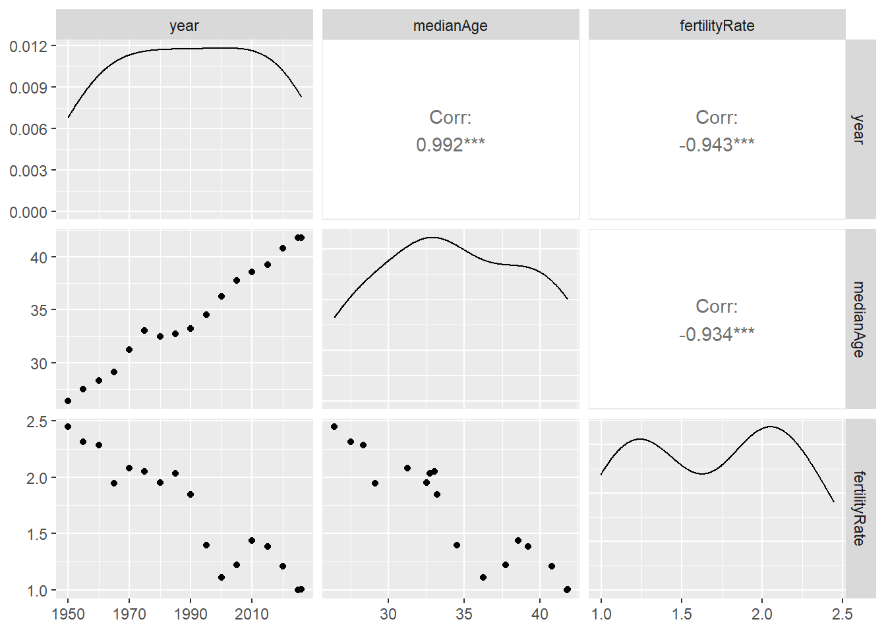
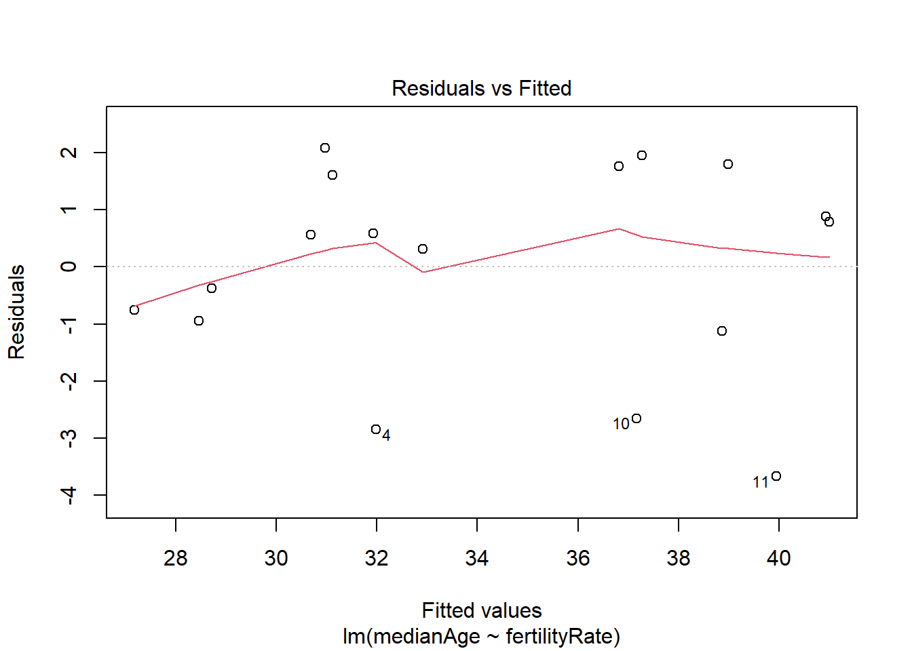
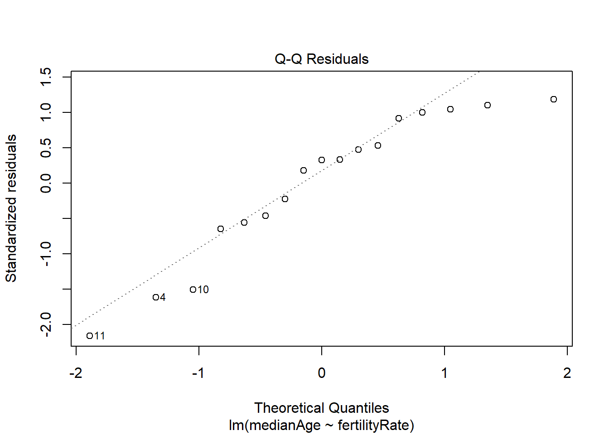
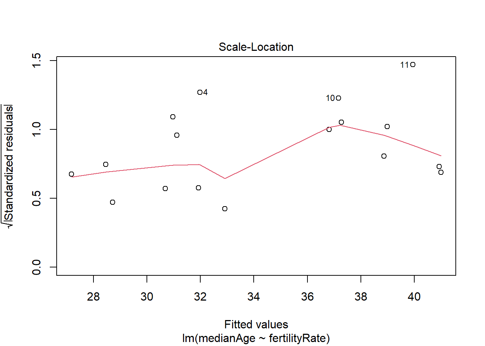
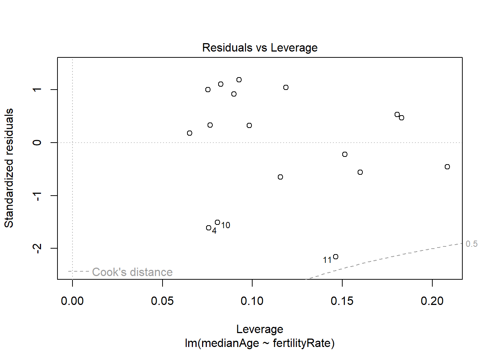

#install.packages(c("tidyverse", "jsonlite"))
#install.packages("GGally")
library(GGally)
library(tidyverse)
library(jsonlite)
dir.create("figures", showWarnings = FALSE)
dir.create("data/processed", recursive = TRUE, showWarnings = FALSE)Лабораторна робота №5. Побудова регресійних моделей
Документ зроблено в Quarto
Хід роботи
Крок 1. Завантаження підготовлених даних
demo_path <- "data/raw/median_year.json"
if (!file.exists(demo_path)) {
stop("Не знайдено файл")
}
demo_all <- fromJSON(demo_path)
data <- demo_all |>
select(year, medianAge, fertilityRate)
dataКрок 2. Опис метаданих
year - рік.
fertilityRate — коефіцієнт народжуваності ((кількість живонароджених за рік / середня чисельність населення) × 1000).
medianAge - медіанний вік населення (вік, що ділить населення на дві рівні половини).
data |>
select(medianAge, fertilityRate, year) |>
cor() |>
knitr::kable(
caption = "Таблиця оцінок коефіцієнтів кореляції"
)| medianAge | fertilityRate | year | |
|---|---|---|---|
| medianAge | 1.0000000 | -0.9343485 | 0.9916288 |
| fertilityRate | -0.9343485 | 1.0000000 | -0.9431343 |
| year | 0.9916288 | -0.9431343 | 1.0000000 |
data |>
select(year,medianAge:fertilityRate) |>
ggpairs()
model <- lm(medianAge~fertilityRate, data = data)
summary(model)
Call:
lm(formula = medianAge ~ fertilityRate, data = data)
Residuals:
Min 1Q Median 3Q Max
-3.6754 -0.9405 0.5701 1.6120 2.0856
Coefficients:
Estimate Std. Error t value Pr(>|t|)
(Intercept) 50.507 1.647 30.66 6.02e-15 ***
fertilityRate -9.536 0.939 -10.15 4.08e-08 ***
---
Signif. codes: 0 '***' 0.001 '**' 0.01 '*' 0.05 '.' 0.1 ' ' 1
Residual standard error: 1.842 on 15 degrees of freedom
Multiple R-squared: 0.873, Adjusted R-squared: 0.8645
F-statistic: 103.1 on 1 and 15 DF, p-value: 4.082e-08plot(model)


